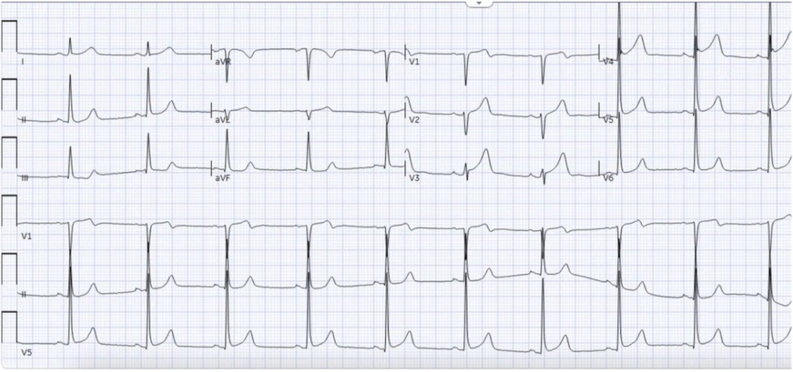
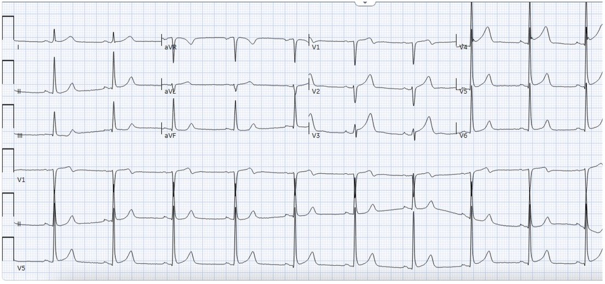
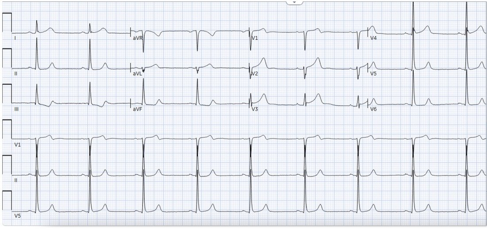
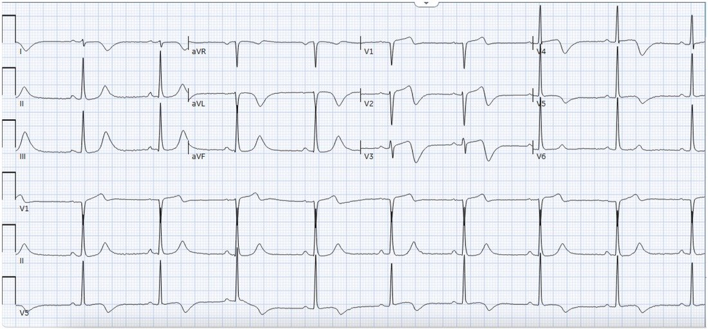
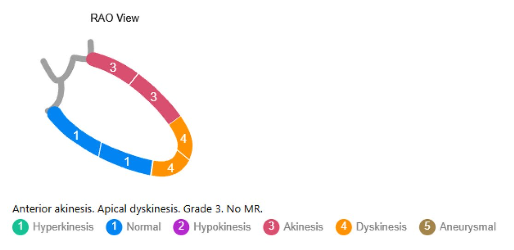
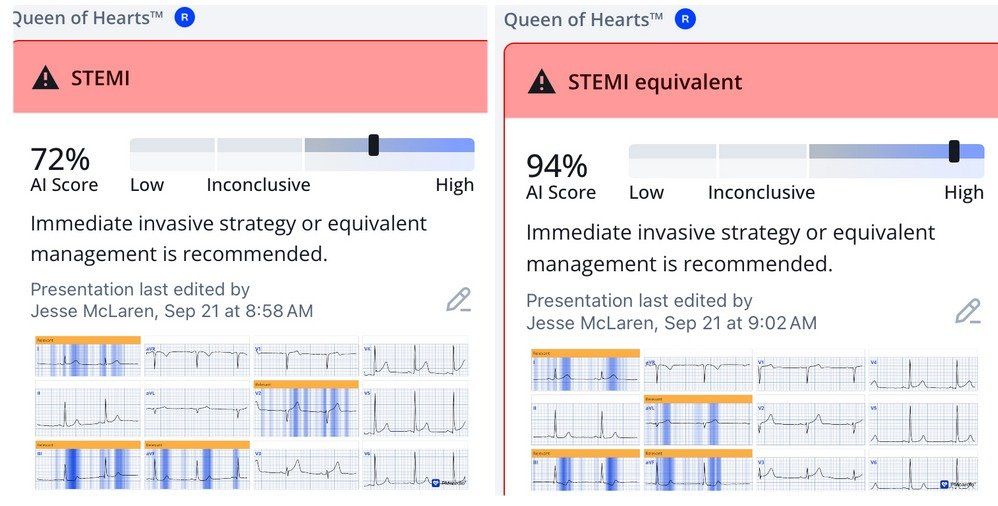
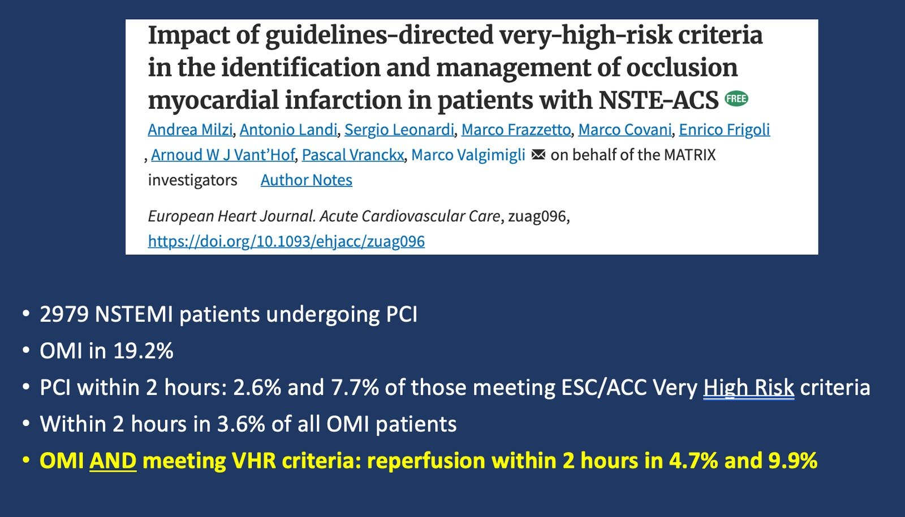
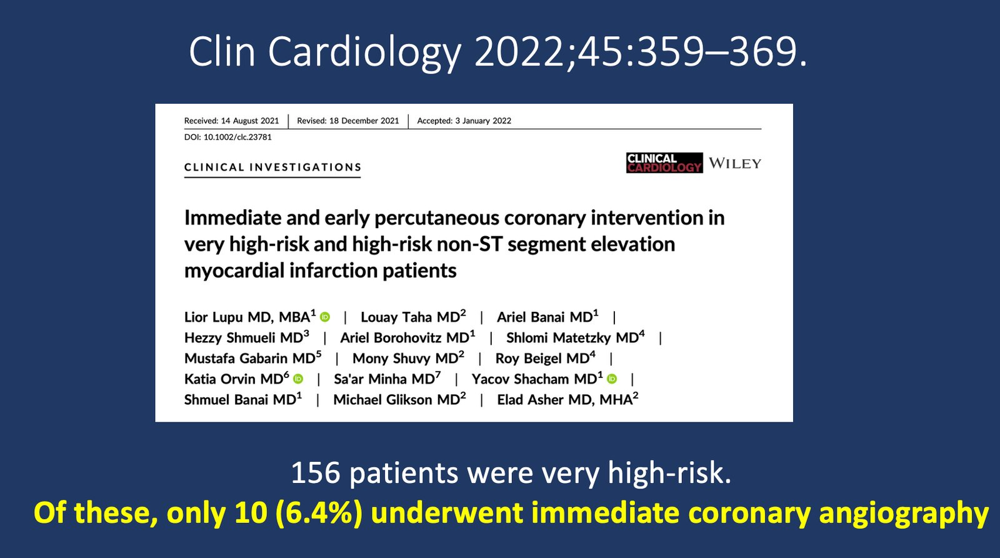
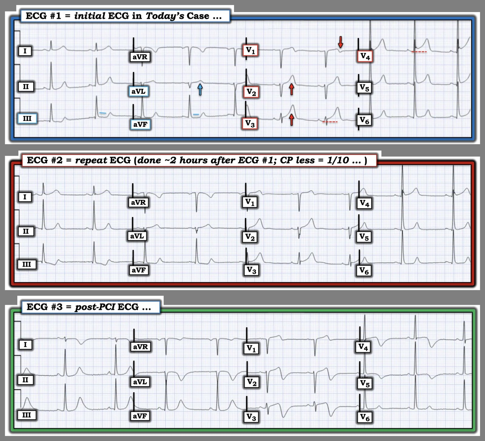

28/09/2026 — Nam 50 tuổi đau ngực: các điện tâm đồ liên tiếp ‘STEMI âm tính’, nhưng bệnh nhân có nhồi máu cơ tim do tắc (OMI) không?
Bản dịch tiếng Việt của bài "50-year old with chest pain: serial ECG ‘STEMI negative’, but does the patient have Occlusion MI?" – Dr. Smith’s ECG Blog. Giữ nguyên toàn bộ 8 hình ảnh và 1 video của bản gốc.


Ca bệnh do BS. Mazen El-Baba gửi và viết, BS. Jesse McLaren biên tập
Khi đọc bài này, xin nhớ rằng Mô hình AI điện tâm đồ PMCardio Queen of Hearts nay đã được FDA phê duyệt. Bệnh nhân của bạn không còn phải ngồi chờ trong khi cơ tim đang chết dần, và bác sĩ can thiệp của bạn không còn phải bị gọi đến vì các ca dương tính giả. Giải pháp đã có ở đây và sẵn sàng sử dụng.
Xem thêm tại đây: Queen of Hearts Now FDA Approved!! What’s her take on this “Non-diagnostic” ECG?
= = =
Ca bệnh:
Một bệnh nhân nam 50 tuổi, tiền sử hút thuốc 40 gói-năm, được đội cấp cứu ngoài viện (EMS) đưa đến vì đau ngực giữa xương ức khởi phát đột ngột, sau đó ngất. Cơn đau bắt đầu khoảng sáu giờ trước khi đến viện, lan lên hàm, kèm khó thở, chóng mặt, vã mồ hôi và một cơn ngất có người chứng kiến. Bệnh nhân chưa dùng aspirin trước khi đến. Lúc ở nhà cơn đau ở mức 10/10 và đã giảm còn 6/10 khi bệnh nhân đến khoa cấp cứu (ED).
Khi đánh giá phân loại, bệnh nhân vẫn còn đau ngực (2/10). Huyết áp 126/85 mmHg, tần số tim 67 nhịp/phút, tần số thở 18 lần/phút, độ bão hòa oxy 96% khi thở khí trời, nhiệt độ 37°C. Tiếng tim bình thường, phổi trong, mạch quay hai bên bằng nhau.
Điện tâm đồ đầu tiên được ghi tại khu phân loại. Bạn nghĩ gì?


.
.
.
Điện tâm đồ cho thấy nhịp xoang bình thường, các khoảng/trục/tăng tiến sóng R bình thường, và điện thế cao ở các chuyển đạo bên trái khiến các chuyển đạo trước khó diễn giải hơn. Có sóng T dạng xuống/lên kín đáo ở III, có thể là thay đổi soi gương (reciprocal) sớm của vùng bên cao.
Smith: Tôi chỉ bị thuyết phục khi nhìn thấy sóng T dạng xuống-lên này ở chuyển đạo III. Tôi cho rằng nó giúp điện tâm đồ này đủ để chẩn đoán nhồi máu cơ tim do tắc (OMI).
Điện tâm đồ được ký xác nhận là STEMI âm tính, và bệnh nhân phải chờ kết quả troponin độ nhạy cao (hs-troponin), là 1,665 ng/L. Sau đó bệnh nhân mới được bác sĩ khoa cấp cứu khám, 2 giờ sau khi đến viện, lúc cơn đau ngực đã giảm còn 1/10, kèm một điện tâm đồ ghi lại.


Vẫn STEMI âm tính, nhưng có sóng T dạng xuống/lên ở các chuyển đạo dưới, thay đổi động (dynamic) và nay rõ hơn. Dù cơn đau đã cải thiện, điện tâm đồ lại trông thiếu máu cục bộ hơn chứ không phải ít hơn. Siêu âm tim tại giường được thực hiện, cho thấy rối loạn chức năng vùng lan rộng: mỏm tim và thành trước, thành bên, vách ở đoạn giữa đến đoạn xa đều vô động. Điều này rất đáng lo ngại cho thiếu máu cục bộ cấp vùng chi phối của LAD. Dưới đây là mặt cắt trục ngắn cạnh ức:
= = =
Non-STEMI hay STEMI(-)OMI?
Tại thời điểm này, chẩn đoán làm việc phải là OMI cho đến khi chứng minh được điều ngược lại, kèm chụp mạch vành ngay lập tức. Bác sĩ cấp cứu đã liên hệ khoa tim mạch và đề nghị chụp mạch vành dựa trên:
- Bệnh sử: đau sau xương ức đột ngột lan lên hàm, kèm vã mồ hôi, khó thở và ngất; mặc dù cơn đau đã cải thiện từ 10/10 xuống 6/10 rồi cuối cùng còn 1/10, nó vẫn chưa hết hoàn toàn
- Điện tâm đồ: các thay đổi điện tâm đồ động kín đáo
- Troponin: troponin 1,665ng/L
- POCUS: rối loạn vận động thành khu trú lan rộng ở vùng chi phối của LAD.
Nhưng vì các điện tâm đồ liên tiếp đều ‘STEMI âm tính’, khoa tim mạch đã nhận bệnh nhân vào viện với chẩn đoán ‘Non-STEMI’. Kế hoạch này không thay đổi khi troponin độ nhạy cao lặp lại tăng lên 6,557 ng/L. Troponin tiếp tục tăng, đạt 21,018 ng/L vào ngày hôm sau.
Smith: troponin tăng dần không phải là bằng chứng của OMI còn tồn tại. Nó có nghĩa là đã có tắc trước đó và có thể vẫn đang tiếp diễn. Chỉ điện tâm đồ mới có thể cho bạn biết liệu tình trạng tắc có còn tồn tại hay không. Sự hiện diện của đau ngực dai dẳng là hữu ích (và là một chỉ định tái tưới máu cấp cứu theo guideline!), nhưng không phải lúc nào cũng có khi tắc còn tồn tại — điện tâm đồ đáng tin cậy hơn, và lẽ ra bệnh nhân đã phải được đưa vào phòng thông tim (cath lab) ngay từ điện tâm đồ đầu tiên.
Sự tăng vọt này đã dẫn đến chụp mạch vành vào khoảng 19 giờ sau lần đến viện ban đầu. Chụp mạch cho thấy tắc 99% đoạn gần LAD với dòng chảy TIMI 1, được điều trị bằng can thiệp mạch vành qua da (PCI).
Một điện tâm đồ ghi sau PCI cho thấy sóng T đảo ngược do tái tưới máu theo phân bố của đoạn gần LAD:


= = =
Siêu âm tim chính thức sau chụp mạch cho thấy LVEF 35–40%, mỏm tim vô động và vô động thành trước, thành bên, vách ở đoạn giữa đến đoạn xa:


= = =
Mô hình STEMI và mô hình OMI
Theo mô hình STEMI, đây là một ca ‘Non-STEMI’. Các guideline khuyến cáo chiến lược xâm lấn nội trú cho NSTE-ACS nguy cơ trung bình hoặc cao, trong đó chụp mạch vành trong vòng 24 giờ được xem là phù hợp với nhiều bệnh nhân nguy cơ cao. Do đó, chụp mạch vào khoảng 19 giờ nằm trong một lộ trình NSTEMI thông thường (dù nếu đau kháng trị thì phải chụp mạch ngay lập tức, theo các guideline NSTEMI vốn hiếm khi được tuân thủ). Điều này có nghĩa là ca này sẽ không bị gắn cờ để cải tiến chất lượng. Trong mô hình STEMI, chẩn đoán ra viện được thay đổi đối với ‘STEMI dương tính giả’ nhưng không thay đổi đối với các ca âm tính giả: chẩn đoán ‘NSTEMI’ vẫn giữ nguyên ngay cả khi nhìn lại, vì vậy các ca tắc bị bỏ sót cả ở thời điểm tiến cứu lẫn hồi cứu.[1]
Nhưng đây là một OMI STEMI âm tính. Bệnh nhân này có triệu chứng thiếu máu cục bộ dai dẳng và bằng chứng khách quan về rối loạn chức năng cơ tim khu trú ngay khi còn ở khoa cấp cứu. Chờ đợi tiêu chuẩn STEMI hoặc troponin tăng cao hơn đồng nghĩa với chờ thêm cơ tim bị nhồi máu.
Nhìn lại, chụp mạch sớm hơn rõ ràng sẽ tốt hơn cho một bệnh nhân bị tắc đoạn gần LAD với dòng chảy TIMI-1 và EF giảm còn 35%. Và ca STEMI(-)OMI này lẽ ra đã có thể được tái tưới máu nhanh chóng dựa trên các dữ kiện vượt ra ngoài tiêu chuẩn STEMI: bệnh nhân có bệnh sử rất đáng lo ngại, còn đau do thiếu máu cục bộ, bất thường điện tâm đồ động, troponin tăng từ 1,665ng/L, và rối loạn chức năng khu trú lan rộng ở vùng chi phối của LAD trên POCUS. Gộp lại, các dấu hiệu này tạo nên một lập luận thuyết phục cho OMI và cho việc chụp mạch vành ngay trong đêm đó thay vì chờ troponin tiếp tục tăng.
AI được huấn luyện trên OMI có thể hỗ trợ quyết định tái tưới máu bằng cách nhận diện các thay đổi điện tâm đồ kín đáo nhưng quan trọng. Dưới đây là kết quả đọc của Queen of Hearts đối với hai điện tâm đồ, với cách diễn giải khác nhau cho V2, nhưng đều nhận diện được sóng T dạng xuống-lên ở các chuyển đạo dưới, soi gương với sóng T tối cấp kín đáo ở vùng bên cao, với độ tin cậy cao hơn ở điện tâm đồ thứ hai:


= = =
Điều cần nhớ:
- OMI là một chẩn đoán lâm sàng được hỗ trợ bởi nhiều dữ kiện. Bệnh sử xác lập xác suất tiền nghiệm; điện tâm đồ, các điện tâm đồ liên tiếp, troponin và chẩn đoán hình ảnh tim sẽ cập nhật xác suất đó.
- Các dấu hiệu điện tâm đồ kín đáo có ý nghĩa, đặc biệt khi chúng thay đổi động, và thay đổi soi gương có thể xuất hiện sớm hơn và rõ hơn.
- Đau đang cải thiện không đồng nghĩa với hết đau. Ngay cả đau 1/10 = vẫn đang đau, và ACS có đau kháng trị đòi hỏi chụp mạch vành ngay lập tức
- Troponin chẩn đoán tổn thương cơ tim, chứ không phải tình trạng thông của động mạch vành. Đừng chờ troponin tăng cao, hay dùng nhãn NSTEMI, để quyết định liệu vùng cơ tim đang bị đe dọa có cần tái tưới máu ngay hay không.
- POCUS có thể làm thay đổi xác suất. POCUS bình thường không thể loại trừ OMI, nhưng ở bệnh nhân nguy cơ cao có thay đổi điện tâm đồ kín đáo, một rối loạn vận động thành khu trú mới xuất hiện ủng hộ mạnh OMI.
- Thời điểm tuân thủ guideline dựa trên mô hình STEMI dẫn đến chậm trễ tái tưới máu cho STEMI(-)OMI, điều có thể phòng tránh được bằng cách chú ý đến các đặc điểm lâm sàng, điện tâm đồ và POCUS của OMI
- Đau do thiếu máu cục bộ + thay đổi điện tâm đồ động + rối loạn vận động thành khu trú = OMI cho đến khi chứng minh được điều ngược lại.
= = =
Tài liệu tham khảo:
- McLaren, El-Baba, Sivashanmugathas, Meyers, Smith, Chartier. Missing occlusions: quality gaps for ED patients with occlusion MI. Tạp chí AJEM, 2023.
= = =
Bình luận của Smith:
Các guideline NSTEMI không hiệu quả. Trong nghiên cứu của Lupu và cs., chỉ 6% bệnh nhân đáp ứng “tiêu chuẩn nguy cơ cao” được xử trí theo đúng guideline. Trong một nghiên cứu mới của Milzi và cs. — chưa đến 10% các ca OMI đáp ứng tiêu chuẩn nguy cơ cao được chăm sóc ở mức chấp nhận được theo guideline. NSTEMI “nguy cơ cao”, với mất cơ tim dai dẳng, phù phổi, bất ổn điện học và sốc/tụt huyết áp, thực chất là “Biến chứng của OMI không được chẩn đoán”. Như vẫn xảy ra trên khắp thế giới, các guideline NSTEMI “nguy cơ cao” không được tuân thủ, và ngay cả khi được tuân thủ, can thiệp cũng sẽ quá chậm để cứu được nhiều cơ tim, vì các guideline nguy cơ cao thường dựa vào troponin tăng (tổn thương đã xảy ra) có hoặc không kèm biến chứng. Đó là lý do chúng ta phải chẩn đoán OMI ngay trên điện tâm đồ đầu tiên, kích hoạt phòng thông tim, và mở thông động mạch để cứu cơ tim, cứu sống bệnh nhân và phòng ngừa suy tim. Điều này chỉ có thể được thực hiện một cách đáng tin cậy bằng Mô hình AI điện tâm đồ PMCardio Queen of Hearts.
Hãy nhớ: NSTEMI là một chẩn đoán vô giá trị.
= = =
Tài liệu tham khảo:
Lupu L, Taha L, Banai A, và cs. Immediate and early percutaneous coronary intervention in very high-risk and high-risk non-ST segment elevation myocardial infarction patients. Clin Cardiol [Internet] 2022;Available from: https://onlinelibrary.wiley.com/doi/10.1002/clc.23781Milzi A, Landi A, Leonardi S, và cs. Impact of guidelines-directed very-high-risk criteria in the identification and management of occlusion myocardial infarction in patients with NSTE-ACS. Eur Heart J Acute Cardiovasc Care [Internet] 2026;(zuag096). Available from: http://dx.doi.org/10.1093/ehjacc/zuag096/8764093




= = =
==================================
BÌNH LUẬN CỦA TÔI, bởi KEN GRAUER, MD (28/9/2026):
Tôi thấy thật đáng lo ngại khi xem lại ca bệnh hôm nay. Chẳng hạn:
- Bệnh nhân là một người đàn ông 50 tuổi có yếu tố nguy cơ mạnh là hút thuốc nhiều và lâu năm — người mô tả cơn CP 10/10 (đau ngực – Chest Pain) khởi phát đột ngột khiến ông phải đến khoa cấp cứu.
- Điện tâm đồ ban đầu được “ký xác nhận là STEMI âm tính”.
- Sau đó bệnh nhân “chờ kết quả Troponin độ nhạy cao”.
- CP của bệnh nhân đã giảm từ 10/10 lúc khởi phát — xuống 6/10 vào lúc ông đến khoa cấp cứu (tức là, vào thời điểm điện tâm đồ #1 được ghi) — và cuối cùng còn 1/10 trong thời gian ông “chờ kết quả hs-Troponin”.
- “Sau đó” bệnh nhân mới được bác sĩ khoa cấp cứu khám (tức là, Có vẻ bệnh nhân chỉ được khám 2 giờ sau khi đến khoa cấp cứu — tức là chỉ sau khi kết quả Troponin lần 1 trả về tăng đáng kể ở mức 1,665 ng/l — và có vẻ chỉ đến lúc đó mới dẫn đến việc ghi điện tâm đồ thứ 2).
Bác sĩ khoa cấp cứu đã làm đúng khi cho siêu âm tim tại giường (cho thấy rối loạn chức năng thất trái khu trú lan rộng). Bác sĩ khoa cấp cứu đã nhận ra đúng các thay đổi điện tâm đồ “động“ kín đáo trên điện tâm đồ #2 — và đã làm đúng khi liên hệ khoa tim mạch, đề nghị thông tim sớm dựa trên tất cả những điều trên. Nhưng khoa tim mạch lại “bám chặt” vào nhãn “STEMI âm tính” — đến mức thông tim cho thấy tắc cấp đoạn gần LAD mãi đến ngày hôm sau mới được thực hiện (= 19 giờ sau khi bệnh nhân đến khoa cấp cứu).
- BS. Mazen El-Baba và BS. McLaren đã nêu bật những lý do khiến tất cả các phần nói trên của ca bệnh hôm nay trở nên đáng lo ngại.
= = =
Các điện tâm đồ trong Hình 1:
“STEMI âm tính” là mô tả sai cho điện tâm đồ ban đầu của ca hôm nay. Đó là vì bệnh sử ( = CP 10/10 khởi phát đột ngột ở một bệnh nhân nguy cơ cao — nhưng mức độ triệu chứng đã giảm đáng kể vào lúc ghi điện tâm đồ #1) cho chúng ta biết rằng có thể chúng ta sẽ không thấy mức ST chênh lên cần thiết để thỏa tiêu chuẩn STEMI. Nhưng bất kể điện tâm đồ ban đầu có thỏa tiêu chuẩn STEMI hay không — điện tâm đồ #1 có dấu hiệu rõ ràng của một OMI cấp cho đến khi chứng minh được điều ngược lại:
- “Con mắt” của chúng ta phải bị thu hút ngay bởi sóng T tối cấp tăng lớn không tương xứng ở chuyển đạo V3 (lấn át hẳn phức bộ QRS nhỏ xíu ở chuyển đạo này). Ở chuyển đạo này cũng có một mức ST chênh lên không phù hợp, nhỏ nhưng chắc chắn.
- Chuyển đạo kế cận V4 cho thấy ST chênh lên nhiều hơn một chút (mà ta biết là bất thường — vì ST chỉ chênh lên không đáng kể ở các chuyển đạo trước tim bên hơn tiếp theo là V5 và V6).
- Chuyển đạo kế cận V2 cũng cho thấy một sóng T tối cấp (tăng lớn không tương xứng) khi xét đến phức bộ QRS nhỏ ở chuyển đạo này.
- Sự đi xuống kín đáo nhưng dốc của sóng T dương nhỏ ở chuyển đạo V1 thành phần cuối âm (mũi tên ĐỎ ở chuyển đạo này) không phải là một dấu hiệu bình thường. Trong bối cảnh lâm sàng CP đã giảm ( = 6/10 vào thời điểm ghi bản ghi này) — dấu hiệu này gợi ý có ít nhất một mức độ tái tưới máu tự phát là nguyên nhân khiến CP của bệnh nhân giảm.
- Các dấu hiệu ở chuyển đạo chi trên điện tâm đồ #1 cũng kín đáo — nhưng phù hợp với chẩn đoán OMI cấp cho đến khi chứng minh được điều ngược lại (tức là, Có sóng T tăng lớn không tương xứng ở chuyển đạo aVL — và ST thẳng đuỗn ở các chuyển đạo dưới III và aVF).
Như BS. Mazen El-Baba và BS. McLaren đã nêu — điện tâm đồ #2 cho thấy các thay đổi ST-T “động” kín đáo nhưng có thật, dưới dạng góc gập của ST chênh xuống trở nên sắc nét hơn ở các chuyển đạo III và aVF (điều RẤT DỄ bị bỏ sót nếu không đọc điện tâm đồ #2 bằng cách đặt nó ngay cạnh điện tâm đồ #1).
- Xác nhận rằng các dấu hiệu tôi mô tả ở trên trên điện tâm đồ #1 là có thật — đến từ việc xem xét điện tâm đồ #3 — cho thấy sóng T tái tưới máu rất rõ ở các chuyển đạo V1,V2,V3,V4 — cũng như ở các chuyển đạo chi aVL, III và aVF (đó chính là tất cả các chuyển đạo đã cho thấy dấu hiệu báo trước những gì sẽ xảy ra trên điện tâm đồ ban đầu).
ĐIỀU CỐT LÕI: Xem lại các diễn biến trong ca bệnh hôm nay thật đáng lo ngại …
= = =
Hình 1: So sánh 3 điện tâm đồ trong ca bệnh hôm nay.


= = =
= = =